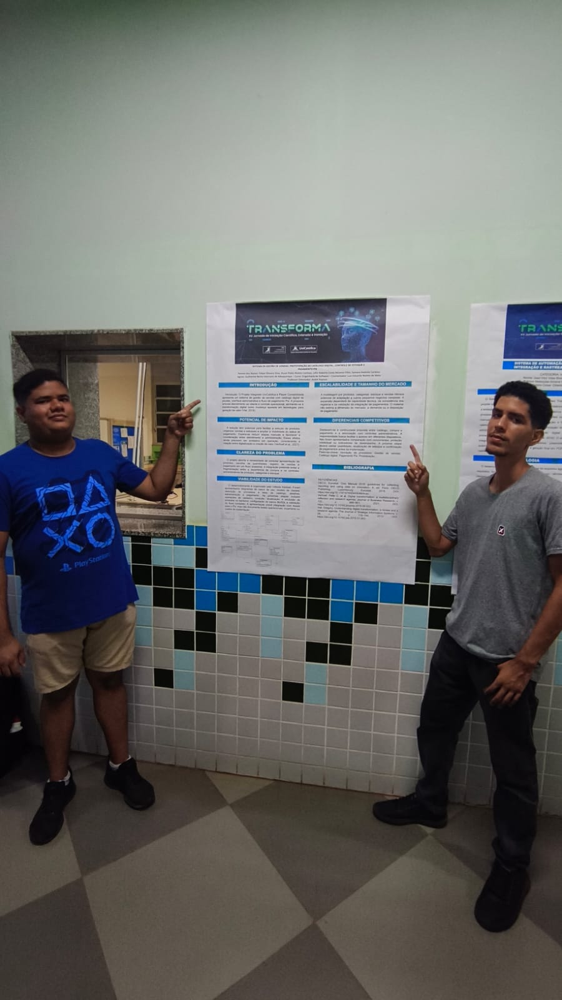

Catálogo de picolés junta venda, estoque e Pix em um só lugar
Protótipo de estudantes de Engenharia de Software da UniCatólica, feito com a Player Contabilidade, liga o cardápio digital ao controle da loja.
Por Esmarlones Lisboa de Sousa Junior. Palmas, 7 de outubro de 2026.

Objetivo do projeto
O Projeto Integrado da UniCatólica, em parceria com a Player Contabilidade, propõe um sistema de gestão de vendas para uma loja de picolés. A ideia é juntar o catálogo digital, a área de administração e o pagamento por Pix no mesmo caminho.
Nas telas mostradas no banner, o cliente vê o produto e escolhe a quantidade, enquanto quem administra acompanha a venda e o status do pagamento. O material também mostra uma tela com os detalhes do item e outra para controlar a loja.
O que se quer é diminuir o trabalho manual e fazer o atendimento conversar com o controle da loja. O projeto ainda está na fase de protótipo, antes de ser colocado em uso.
Problema a ser resolvido
A equipe parte de uma compra que fica quebrada em pedaços. Mostrar os produtos, escolher a quantidade, registrar a venda e pagar não acontecem juntos.
Quando esses passos ficam separados, o cliente espera mais e quem administra perde o controle do estoque, das categorias e do que já foi pago. O banner trata essa quebra como o problema principal.
A proposta é um fluxo fácil de usar, inclusive em telas menores, em que a compra converse com o controle de produtos, categorias e estoque.
Área de atuação
O projeto atua na gestão de vendas do pequeno comércio de alimentos. O caso escolhido é um catálogo digital de picolés, e não um aplicativo qualquer de entrega.
As palavras-chave do banner colocam o trabalho em inovação de processos, gestão de vendas, catálogo digital, pagamento por Pix e prototipação. É o tipo de loja em que o mesmo lugar mostra o produto, recebe o pagamento e precisa saber o que ainda tem para vender.
A forma como foram organizados os produtos, as categorias, o estoque e as vendas pode servir também para outros pequenos comércios. O próprio material diz que isso depende da capacidade técnica, de registros bem feitos e de testar a integração de pagamentos.
Público-alvo
De um lado está quem compra o picolé: precisa ver o produto, escolher a quantidade e pagar por Pix sem sair do fluxo. De outro, está quem cuida da loja e usa a área de administração para organizar produtos, vendas e estoque.
A necessidade principal, segundo o banner, é ligar a escolha do cliente ao registro da venda e ao status do pagamento. Sem isso, o atendimento e a administração trabalham separados.
Como o foco é em picolés, o público é bem específico. Um comércio pequeno, com cardápio curto e pagamento instantâneo, sente mais a dificuldade de anotar a venda à mão do que uma rede grande que já tem sistema próprio.
Partes interessadas
Os autores do projeto são Felipe Oliveira Silva, Jhuan Pablo Noleto Cardoso, Lélio Roberto Costa Moreno Filho, Samara Andréia Cardoso Aguiar e Guilherme Bento Valeriano de Albuquerque, do curso de Engenharia de Software. Luís Eduardo Noleto de Melo é o coorientador e André Raposo é o professor orientador.
A Player Contabilidade participa como parceira do Projeto Integrado. O interesse dela está no controle da operação e na organização dos registros de venda, estoque e pagamento.
Também fazem parte o dono do comércio, que usaria o sistema, e o cliente do catálogo. A confirmação do Pix está prevista para ser feita com a Asaas, mas o banner não mostra nenhum teste dessa ligação.
Outras soluções parecidas
Pequenos comércios de alimentação já encontram cardápio digital, sistema de caixa e controle de estoque em produtos prontos. O banner não fala do tamanho do mercado, nem da demanda, nem de quanto as pessoas pagariam, e a equipe também não comparou com concorrentes.
Bling
O Bling é um sistema de gestão usado por pequenos negócios para vendas, estoque e finanças. Ele se parece com o protótipo porque também organiza os produtos e o registro da venda. A diferença é que o Bling já é um produto pronto, enquanto o trabalho da UniCatólica ainda é um protótipo de catálogo de picolés com Pix.
Goomer
A Goomer oferece cardápio digital para lojas de alimentação, no trecho entre o que o cliente escolhe e o pedido que a loja recebe. O protótipo também começa no catálogo, mas vai até o estoque e o Pix, em um fluxo pensado para picolés e que ainda não tem nenhum indicador de desempenho.
Diferencial
O banner aponta como diferença a ligação entre catálogo, compra e pagamento, junto com os controles de administração. A tela que se adapta ao tamanho do aparelho ajuda a usar o sistema em mais de um tipo de tela.
Comparado com o Bling e a Goomer, o que se destaca não é o controle de estoque sozinho. É o fluxo curto, do cardápio de picolés até o Pix, feito como protótipo de faculdade em parceria com a Player Contabilidade.
O que foi mostrado são telas e o desenho do sistema, e não uma loja funcionando. O próprio material admite que não tem comparação com concorrentes, proteção da ideia nem indicadores. Testar o uso, atualizar o estoque e confirmar os pagamentos ficam para a próxima etapa.
Minha análise
Pontos fortes
Na minha opinião, a proposta é boa porque cobre o caminho inteiro, do catálogo até o pagamento, com telas já desenhadas e um método de trabalho claro. A parceria com a Player Contabilidade e a orientação dos professores dão um contexto real ao protótipo, e a preocupação com telas diferentes pensa em quem usa pelo celular.
Pontos a melhorar
É um projeto piloto, que não foi testado de verdade. O material não mede o mercado, não compara com concorrentes e não traz indicadores. O backend, o MySQL e a Asaas aparecem só como planos para depois, e não há orçamento nem custo para manter o sistema.
Sugestão
Antes de colocar em uso, vale testar com uma loja de picolés três coisas que o próprio banner deixa em aberto: se a pessoa consegue terminar a compra no catálogo, se o estoque muda depois da venda e se o Pix confirmado pela Asaas aparece no status do pagamento.
Autorização
Os responsáveis pelo projeto me autorizaram a publicar o conteúdo neste portal. Esta página não traz telefone, e-mail, endereço ou rede social de ninguém. Se alguém pedir para retirar uma foto, ela será removida do site.